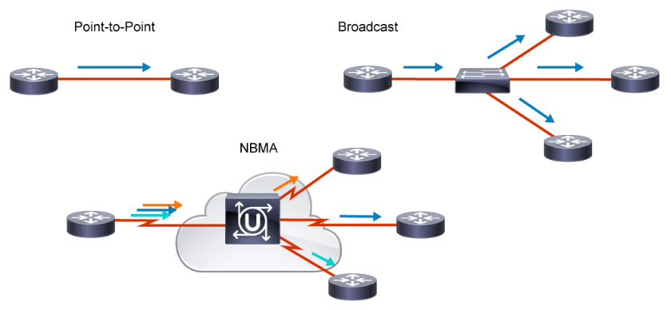
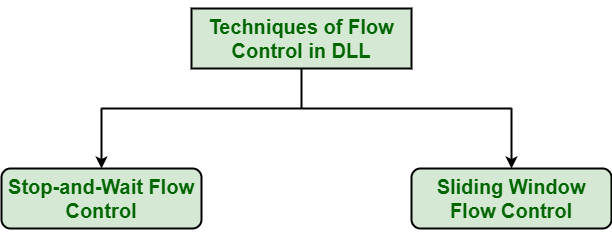
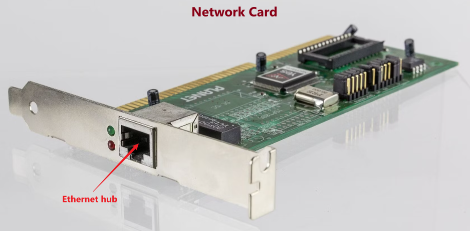
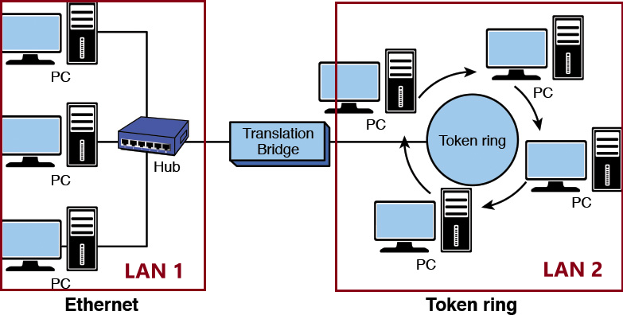
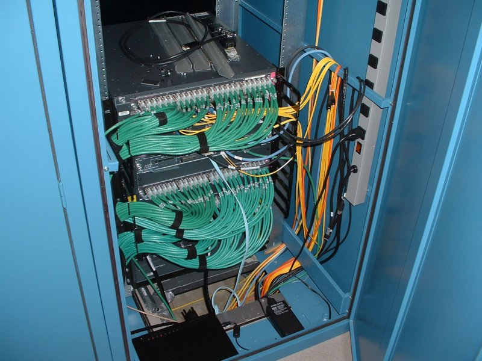
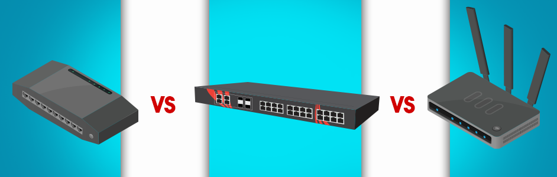

Data Link Layer⚓︎

Definition⚓︎
Demand?
The bitstream can cause errors (see physical layer's cons) when it is transmitted on a medium. We need a new layer that provides high-quality (error free) data transfer services to topper layers (such as network layer).
graph LR
A[Network Layer] -- packets --- B[Data Link Layer]
B -- "frames (bit-by-bit)" --- C[Physical Layer]For?
Data Link Layer has below functions:
Abstracting⚓︎
From physical layer to data link layer
We know that in the physical layer, information is communicated with bit stream through cable or WIFI.
To abstract the data link Layer, we classify the "communication channel" in this layer into two types:
- Point-to-point communication channel (use P2P protocol).
- Broadcast communication channel (use CSMA/CA protocol).

Notice!
To understand the data link layer better, we think about the case of broadcasting first.
LAN (local area network) is a computer network that has the broadcasting function.
Furthermore, from all the LAN products, we peak Ethernet, which fllow the standard of DIX Ethernet V2 or IEEE 802.3.
Anatomy⚓︎
Dissect the data link layer
In order to make the data link layer more suitable for various LAN standards, the 802 committee divided the data link layer into two sub-layers:
- Logical Link Control (LLC): provides the logic for the data link.
- Medium Access Control (MAC)：provides controls for accessing the transmission medium. It is transparent to
LLCsublayer

Let's go to check them one by one! 🛸🛸 Drink some coffee first!

1. MAC Sublayer⚓︎
Mac address⚓︎
MAC Address?
MAC Address is also called as the physical Address of a network device. MAC Address is used by the MAC sublayer. MAC Address is worldwide unique (since millions of network devices exist, we need to uniquely identify each).
Functions of MAC Sublayer⚓︎
MAC sublayer is responsible for:
1.1 Framing⚓︎
Framing?
Transfer network data (a stream of bits) into frames, which is discernible blocks of information.
Frame?
Transferred protocol data units (PDUs) in the data link layer.
Types of Framing

There are two types of Framing:
-
Fixed-size Framing:
The
frameis of fixed size. No need to add delimiters.Con
When the data size is smaller than the fixed frame size, the frame itself will suffer internal fragmentation. We need to
padit. -
Variable-size Framing:
The
frameneeds to indicate the begin and end to be distinguished.Ways to implement
-
Length field: define the length in the frame.- e.g. Ethernet (802.3) →
Ethernet frame. - Cons: Length field may get corrupted sometimes.
- e.g. Ethernet (802.3) →
-
ED (End Delimeter): add end delimiter (like Period in English).- e.g. Token Ring (802.5).
- Cons: The end delimiter can appear in the data.
- Types:
- Character/Byte Stuffing (see later in 1.2 Transparent transmission)
- Bit Stuffing
-
Schematic Diagram of Ethernet frame
Here below is the Ethernet frame format:

-
The Preamble area is used by the receiving interface’s circuitry to determine when a frame arrives and the amount of time between encoded bits (called
clock recovery). -
The SFD and Preamble area indicates when the frame start.
-
The Basic Frame (/Frame) field starts from the
Destination (DST)andSource (SRC)address fields. -
Both DST (destination) and SRC (source) areas are all MAC addresses or known by other names such as:
- Link-layer address
- 802 address
- Hardware address
- Physical address
-
The Type/Lenth area identifies the type of data that follows the header. It is for layer three using layer two frames. It indicates which layer three's protocol is used. Popular values used with
TCP/IPnetworks include:- IPv4 (0x0800)
- IPv6 (0x86DD)
- ARP (0x0806).
-
The DST, SRC, and Type/Lenth are composed as the
MAC header. -
In the MAC Client Data field, we ignore the optional parts and only focus on the Payload area, which is the data the frame carries from source to destination. The Payload data is
encapsulatedby the layer three. -
The FCS (frame check sequence) is used to identify any errors in the frame.
1.2 Addressing⚓︎
As we know, MAC address is unique for each device. Thus, we can encapsulate the unique MAC address -- the source (SRC) and destination (DST) address in the header of each frame to ensure node-to-node delivery.
1.3 Transparent transmission⚓︎
What is the transparent transmission?
It describes a phenomenon of data transmission without error. It's as if the transmission itself doesn't exist.
Why?
- If the data transmitted is printable characters (95 in total) in
ASCIIcode, everything is okay. - However, if the data transmitted contains unprintable characters, errors will show up.
How?
Remember Variable-size Framing? Besides using the length field to implement frame, we can also refer the ED (End Delimeter) method! Here we use Byte Stuffing(or Character Stuffing) 🐤.
Implement Byte Stuffing

As the diagram shows above, we give the following explanations:
Flagcan beSOHorEOT.SOHis the head part of the frame. We can use thePreamble+SFDareas as an example.EOTis the tail part of the frame. We can use theCarrier Extensionareas as an example.- When the
MAC Client Datafield exists unprintable characters such asFlag(SOHorEOT) ORESC, we can add an extraescape character--ESCto diminish ambiguation.
1.4 Control physical medium access⚓︎
No more explanations here; just know it as literal meaning.
2. LLC Sublayer⚓︎
Functions of LLC Sublayer⚓︎
LLC sublayer is responsible for:
2.1 Error Detection⚓︎
What Error?
When data is transmitted, ,0 can possibly be changed into 1, which we call it as bit errors. It can be caused by:
- Noise
- Interference
- Distortion
- Bit synchronization errors
BER (Bit Error Rate)
BER (Bit Error Rate): The percentage of incorrect transmitted bits to the total number of transmitted bits.
How to detect?
CRC (Cyclic redundancy check) is the method we use for error detection.
Below diagram shows the idea of CRC:

A good link for checking the methods for Error Detection: Error Detection in Computer Networks
Unreliable Transmission Protocols
Generally, on the transmission link with poor communication quality (errors exists), we will add the acknowledgement and retransmission mechanisms to make sure the correctness of frame data.
Without the two mechanisms we call the protocol an unreliable transmission protocol, such as:
- PPP (for Point-to-point communication)
- CSMA/CD (for Broadcast communication)
- UDP (for the third layer, we will mention it later)
2.2 Error Correction⚓︎
Just for simple knowing:
Backward Error Correction (Retransmission) − If the receiver detects an error in the incoming frame, it requests the sender to retransmit the frame. It is a relatively simple technique. But it can be efficiently used only where retransmitting is not expensive, as in fiber optics and the time for retransmission is low relative to the requirements of the application.
Forward Error Correction − If the receiver detects some error in the incoming frame, it executes the error-correcting code that generates the actual frame. This saves the bandwidth required for retransmission. It is inevitable in real-time systems. However, if there are too many errors, the frames need to be retransmitted.
2.3 Flow Control⚓︎
It is about processing the frame flow when transmitting. Details about the concepts see in Flow Control in Data Link Layer. There are basically two type of methods:

Devices in Data Link⚓︎
Finally, let's check some devices used in the
Data Link Layer.
Network Interface Card (NIC)

Computer output data, through the Network Interface Card (NIC / Ethernet Card), will become Ethernet frames. Network card will also complete some broadcast link management (CDMA/CD implementation).
Network bridge
A bridge can be used to:
- Interconnect two LANs together.
- Separate network segments, which is a section of a network separated by bridges, switches, and routers.

Ethernet switches
Picture first: 👀

If you have ever traveled to any computer room before, you must have seen the sightseeing below: 
Roughly, we can use Hub, Switch, and Router for Ethernet switches.

But what is the difference?
Hub
Hub is a type of device that’s commonly used as a connection point for various devices in a Local Area Network (LAN).
- It works by receiving packets that arrive at one of its multiple ports, copying the packets, and sending them to its other ports so that all
LANsegments can see the data.
Watch out!
Hub cannot handle the transmit collision. Once the collision happens, the collision will repeat and impact all the devices it connects to. That's why we should use Switch.
Switch (switching hub)
Switch is a more efficient, more intelligent version of a hub.
-
It uses packet switching to receive and forward data to its intended destination within a network.
-
Rather than blindly passing along data to all devices in a network as
Hub, a switch records and "learn" the addresses of the connected devices. -
Thus,
switchcan isolatedconflict domains(which refers to the range that only one device can send information at a time).

Router
Router is the most intelligent and complex of the three network connection devices. Router is the device in the network layer.
-
Rather than just forwarding data packets to other devices in a single network, routers are designed to forward data packets between two or more networks. It also directs traffic between those networks.
-
Router's function =Switch+Hub+ More. -
Thus,
routercan isolatedbroadcast domain(which refers to the range when the site sends out a broadcast signal, all the devices can receive the signal).
Okay, no more knowledge today! Enough details! Cheers the coffee ☕☕

References⚓︎
{kind=link}
{kind=link}
Error Detection and Correction in Data link Layer
{kind=link}
{kind=link}
Networking Fundamentals: OSI 7 - Layer 2 - the data link layer - Part 2
THE DIFFERENCE BETWEEN A HUB, SWITCH, & ROUTER
Created: December 11, 2022 01:42:37